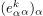
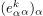
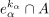
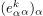

weak-topology
1. Definition
Sei  ein CW-Komplex mit k-Zellen 
Dann gilt, dass eine Teilmenge
ein CW-Komplex mit k-Zellen 
Dann gilt, dass eine Teilmenge  abgeschlossen ist, g.d.w. für jedes
abgeschlossen ist, g.d.w. für jedes  der Durchschnitt
der Durchschnitt

1
abgeschlossen ist.
Sei ein CW-Komplex mit k-Zellen 
Dann gilt, dass eine Teilmenge abgeschlossen ist, g.d.w. für jedes der Durchschnitt
abgeschlossen ist.